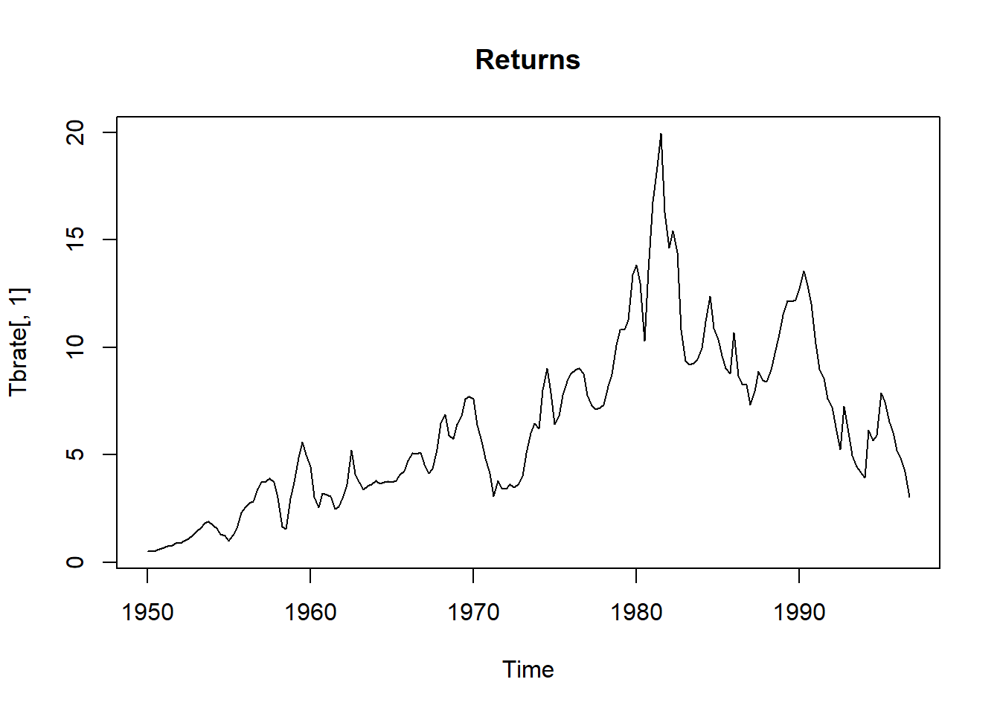
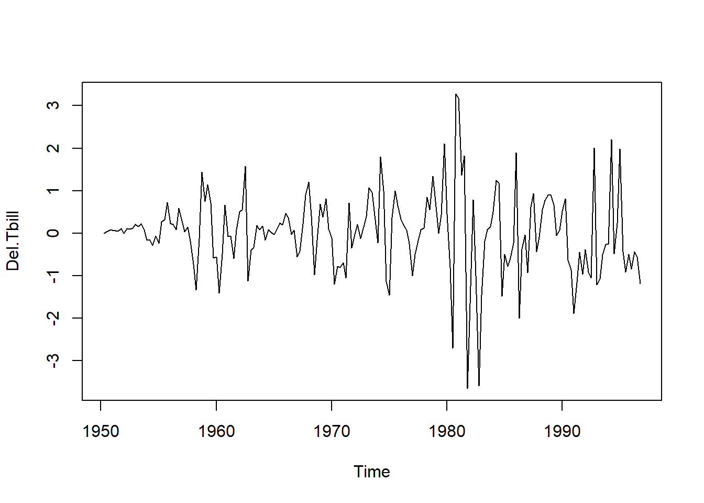
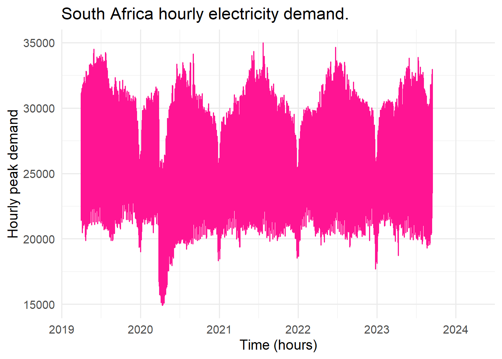
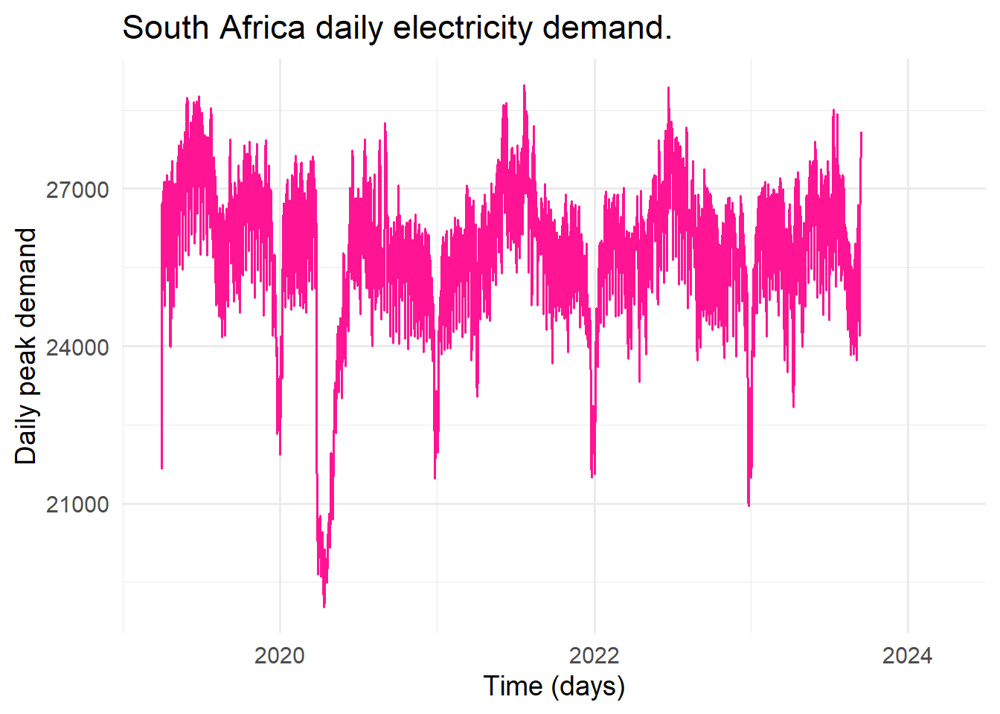
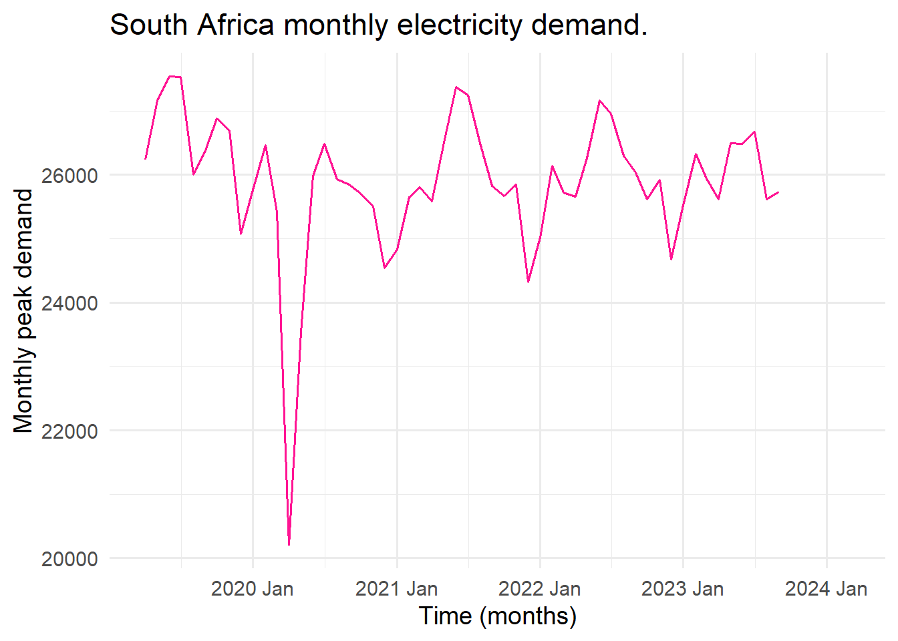
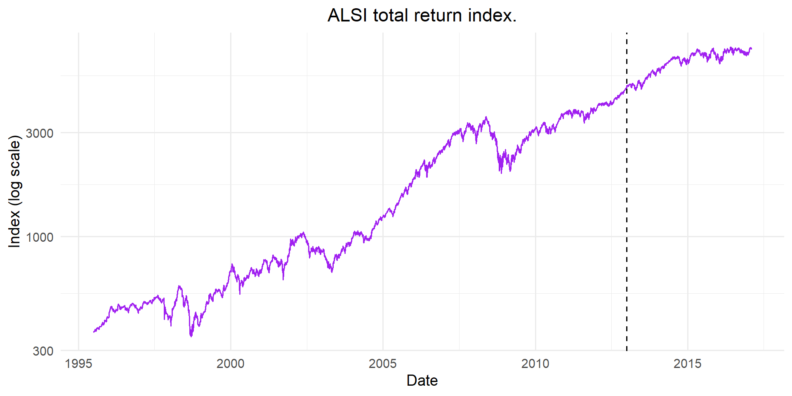
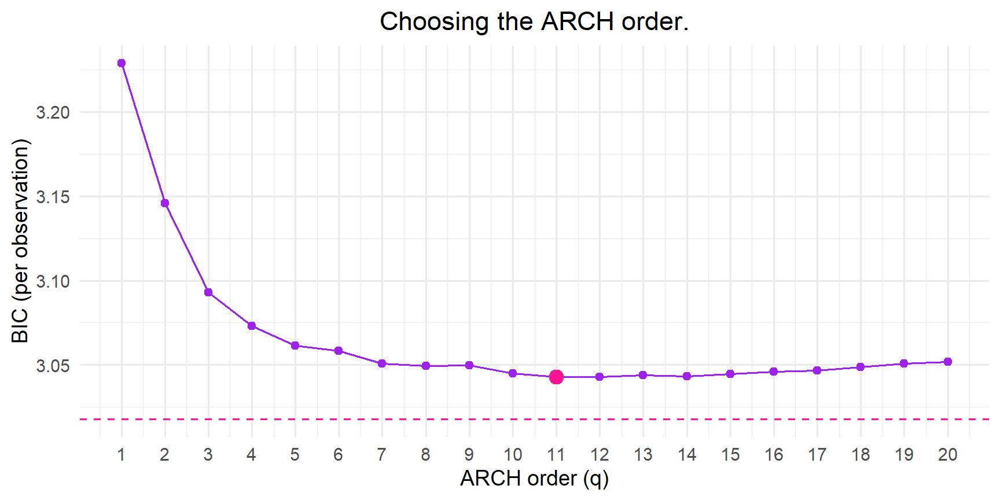
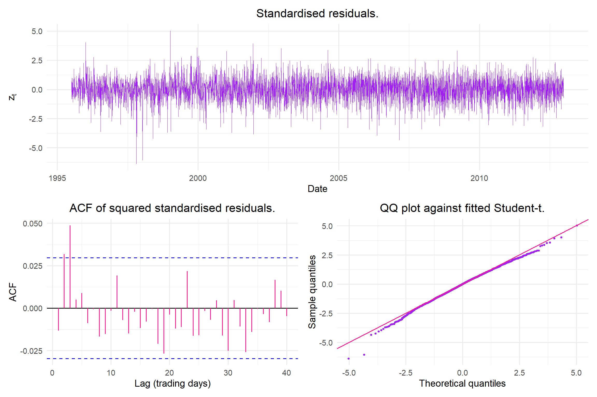
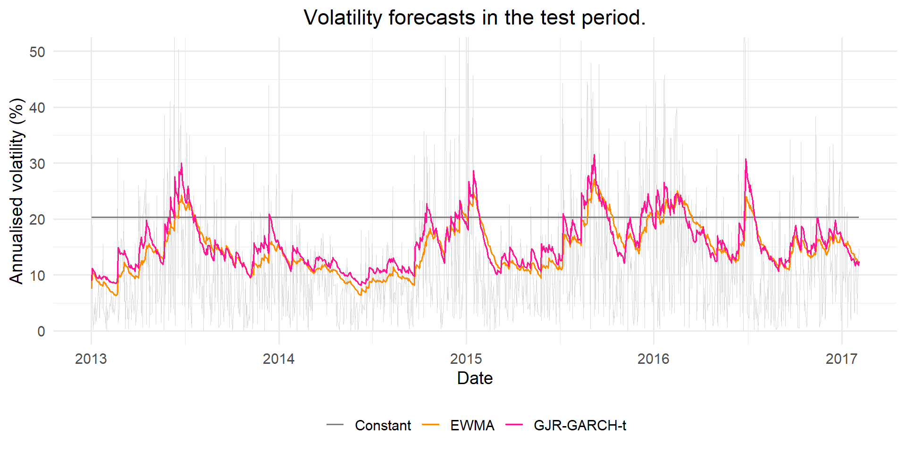
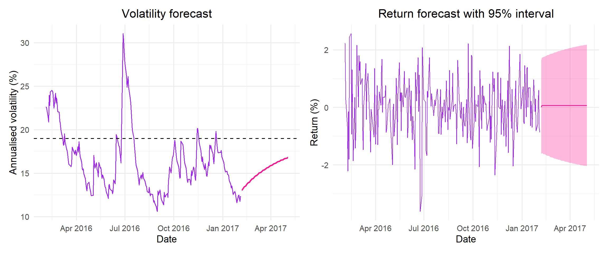

Overview
The Temporal Shift
Time Series Portfolio
Author: Isabella Lethbridge
Student Number: LTHISA001
Date: 25 August 2026
Overview
Welcome to my portfolio for Time Series Analysis. This document showcases my learning progression, statistical understanding, computational applications, and reflections across the course.
Portfolio Structure
Reflective Commentary
Learning Achievements
[cite: 1]
Methodological Challenges
[cite: 1]
Ethical and Reproducibility Considerations
[cite: 1]
Future Areas for Development
[cite: 1]
AI Use Log
| Date | Tool Used | Prompt / Task Description | Link to Conversation | Verification & Changes Made |
|---|---|---|---|---|
| YYYY-MM-DD | ChatGPT / Claude | Debugging R code for model fit | Link | Checked output against manual calculations[cite: 1] |
Section 1
Foundations
Learning outcomes
Explain what a time series is and how it differs from cross-sectional data, and say why temporal dependence calls for its own methods.
Treat an observed series as one realisation of a stochastic process.
Explain what forecasting is, judge when a process is predictable, and keep forecasts, goals and plans separate.
Match a forecast horizon to the decision it supports, and read a forecast as a random variable rather than a single number.
Identify trend, seasonality, cycle and irregular variation in a plot, and describe the shapes each of them takes in practice.
Produce the four benchmark forecasts, and evaluate any competing model against them on data it has not seen.
Use the lag and lead operators, and the algebra built on them, to write models compactly.
Define weak stationarity, say which of its conditions a given series violates, and choose a transformation that restores it.
Define white noise, MA, AR, ARMA, ARIMA and SARIMA processes, derive their basic properties, and identify them from an ACF and a PACF.
Fit, diagnose and forecast these models in R, following the workflow of Box and Jenkins, and test residuals against the white noise standard.
Explain volatility clustering and fit ARCH and GARCH models to it
What is a time series?
Time series is a single measurement taken at multiple points across time. Technically we are modelling the same thing over and over again (this makes sense as to why there is sequential correlation).
Note
Time series model dependence through sequential observations.
Assumption
Equally spaced measurements.
Assumption
Autocorrelation across time.
Qualitative, Continuous and Discrete Series
Example: Continuous series
Figure 1 plots the number of monthly airline passengers over a 12 year period. This figure clearly illustrates the concepts of seasonality and trend.
Example: Discrete series

Figure 2 plots the changing number of observed seals over a period of 25 years.
What to do when you have missing observations in a time series?
In discrete time series to deal with missing observations you can express the model in state-space form (ARIMA or Structural Time Series). For a missing observation \(y_t\), skip the update step in the kalman filter and only run the prediction step. The likelihood is evaluated only over the observed time points.
Kalman filtering
Kalman filtering (linear quadratic estimation) is an algorithm that uses a series of measurements over time to estimate unknown variables, by estimating a joint probability distribution over the variables for each time-step.
In continuous time series, missing observations look like irregularly spaced sampling intervals. You can model the underlying system using Stochastic Differential Equations (CARMA) or you can aggregate the irregular time steps into regular, discrete intervals.
Temporal granularity and the aggregation effect
Aggregating up can either smooth out high-frequency structure (stock returns, etc) or can reveal low-frequency structure (Sales, etc).
One realisation of a stochastic process
Noise in the data introduces different realisations. If your model fits one dataset perfectly then it is overfitting.
The Forecasting Problem
What is forecasting?
Forecasting is a prediction about what will happen in the future based on evidence that we have (with some level of uncertainty). This uncertainty gives rise to forecast intervals (not just point estimates). Goal setting is what we want to happen in the future. Planning helps us reach our goal.
Note
A series can only be called predictable if the interval and horizon are stated.
Forecast \(\rightarrow\) Goal \(\rightarrow\) Plan \(\rightarrow\) Implementation \(\rightarrow\) Outcome \(\rightarrow\) Forecast …
A forecast horizon is how far into the future you try and predict values. When looking at time series data we are looking for stable, informative patterns (not just a lot of data).
A random walk is a process where memory is permanent. Every future shock accumulates endlessly resulting in forecast variance growing linearly. A stationary AR is a process where memory decays geometrically. Shocks dies out, forcing the forecast back to the process mean.
Stationary AR(1) process, \(h\) step forecast error variance:
\[ \text{Var}(e_{T+h}) = \sigma^2 \frac{1-\phi^{2h}}{1-\phi^2} \rightarrow \frac{\sigma^2}{1-\phi^2} \quad \text{as } h \rightarrow \infty \]
Note
Forecasts are random variables.
Exploring a Series
The classical decomposition
\[ \begin{aligned} \text{Additive:} \quad y_t &= T_t + S_t + C_t + I_t \\ \text{Multiplicative:} \quad y_t &= T_t \cdot S_t \cdot C_t \cdot I_t \end{aligned} \] The nature of the seasonality in a series (additive, multiplicative or drifting) determines whether log transformation or differencing are required.
Two ways of looking at a series
- Time domain - this looks at previous observations
You would use time domain when estimating predictive conditional expectations (forecasting at time \(t+1\) given \(t, t-1\)), when dealing with short sample sizes.
A lag is the separation between two observations measured in time units.
Note
Plotting a series against its own first lag is the simplest possible diagnostic for dependence.

- Frequency domain - this looks at previous trends
You would use frequency domain when identifying hidden cycles/patterns or when analysing long-memory dynamics.
The components of a series
Trend is the long run direction of movement. Seasonality is th pattern that repeats at a fixed and known interval. Cycles are long oscillations with no fixed length. Irregular variation (noise) is random variation unexplained by the former.
Time Series Analysis in R
AirPassengers dataset
Click to toggle source code
# Run once — install anything missing
pkgs <- c("tidyverse", "tsibble", "feasts", "fable", "timetk",
"modeltime", "kableExtra", "here")
install.packages(pkgs[!pkgs %in% installed.packages()[, "Package"]])Handling dates and aggregation
AirPassengers is already a time series object but to convert a dataset to a time series object you use: ts(c(), start = c(year, month), frequency = #obs/unit time)
Click to toggle source code
# Read in data:
data(AirPassengers)
# View(AirPassengers)
print(AirPassengers) Jan Feb Mar Apr May Jun Jul Aug Sep Oct Nov Dec
1949 112 118 132 129 121 135 148 148 136 119 104 118
1950 115 126 141 135 125 149 170 170 158 133 114 140
1951 145 150 178 163 172 178 199 199 184 162 146 166
1952 171 180 193 181 183 218 230 242 209 191 172 194
1953 196 196 236 235 229 243 264 272 237 211 180 201
1954 204 188 235 227 234 264 302 293 259 229 203 229
1955 242 233 267 269 270 315 364 347 312 274 237 278
1956 284 277 317 313 318 374 413 405 355 306 271 306
1957 315 301 356 348 355 422 465 467 404 347 305 336
1958 340 318 362 348 363 435 491 505 404 359 310 337
1959 360 342 406 396 420 472 548 559 463 407 362 405
1960 417 391 419 461 472 535 622 606 508 461 390 432Click to toggle source code
# Sum by year:
annual_sum <- aggregate(AirPassengers, FUN = sum)
# Mean by year:
annual_mean <- aggregate(AirPassengers, FUN = mean)
print(annual_sum)Time Series:
Start = 1949
End = 1960
Frequency = 1
[1] 1520 1676 2042 2364 2700 2867 3408 3939 4421 4572 5140 5714Click to toggle source code
print(annual_mean)Time Series:
Start = 1949
End = 1960
Frequency = 1
[1] 126.6667 139.6667 170.1667 197.0000 225.0000 238.9167 284.0000 328.2500
[9] 368.4167 381.0000 428.3333 476.1667Helper conversions
Click to toggle source code
t <- time(AirPassengers)
# Extract Year and Month
years <- floor(t)
months <- round(12 * (t - years)) + 1
head(data.frame(Decimal = as.numeric(t), Year = years, Month = months)) Decimal Year Month
1 1949.000 1949 1
2 1949.083 1949 2
3 1949.167 1949 3
4 1949.250 1949 4
5 1949.333 1949 5
6 1949.417 1949 6Subsetting with window()
Click to toggle source code
# Extract only the second half of 2023
sub_ts <- window(AirPassengers, start = c(1950, 7), end = c(1955, 10))
print(sub_ts) Jan Feb Mar Apr May Jun Jul Aug Sep Oct Nov Dec
1950 170 170 158 133 114 140
1951 145 150 178 163 172 178 199 199 184 162 146 166
1952 171 180 193 181 183 218 230 242 209 191 172 194
1953 196 196 236 235 229 243 264 272 237 211 180 201
1954 204 188 235 227 234 264 302 293 259 229 203 229
1955 242 233 267 269 270 315 364 347 312 274 Lags and Differences
Click to toggle source code
# Shift the time index forward by 1 period (does not move the values)
lagged_ts <- stats::lag(AirPassengers, k = -1)
# First-order differencing (removes linear trend)
diff_ts <- diff(AirPassengers, differences = 1)
# Seasonal differencing (removes a 12-month seasonal pattern)
seasonal_diff_ts <- diff(AirPassengers, lag = 12)
diff_ts Jan Feb Mar Apr May Jun Jul Aug Sep Oct Nov Dec
1949 6 14 -3 -8 14 13 0 -12 -17 -15 14
1950 -3 11 15 -6 -10 24 21 0 -12 -25 -19 26
1951 5 5 28 -15 9 6 21 0 -15 -22 -16 20
1952 5 9 13 -12 2 35 12 12 -33 -18 -19 22
1953 2 0 40 -1 -6 14 21 8 -35 -26 -31 21
1954 3 -16 47 -8 7 30 38 -9 -34 -30 -26 26
1955 13 -9 34 2 1 45 49 -17 -35 -38 -37 41
1956 6 -7 40 -4 5 56 39 -8 -50 -49 -35 35
1957 9 -14 55 -8 7 67 43 2 -63 -57 -42 31
1958 4 -22 44 -14 15 72 56 14 -101 -45 -49 27
1959 23 -18 64 -10 24 52 76 11 -96 -56 -45 43
1960 12 -26 28 42 11 63 87 -16 -98 -47 -71 42Figure 3 illustrates the autocorrelation between AirPassengers and its lag 1.
Combing series
Click to toggle source code
ts_a <- window(AirPassengers, start = c(1950, 1), end = c(1955, 12))
ts_b <- window(AirPassengers, start = c(1955, 1), end = c(1956, 12))
# Union: keeps full range, fills gaps with NA
combined_union <- ts.union(ts_a, ts_b)
# Intersect: keeps only the overlapping months
combined_intersect <- ts.intersect(ts_a, ts_b)
combined_intersect ts_a ts_b
Jan 1955 242 242
Feb 1955 233 233
Mar 1955 267 267
Apr 1955 269 269
May 1955 270 270
Jun 1955 315 315
Jul 1955 364 364
Aug 1955 347 347
Sep 1955 312 312
Oct 1955 274 274
Nov 1955 237 237
Dec 1955 278 278Missing data
Click to toggle source code
has_na <- anyNA(AirPassengers)
cat("Contains missing values:", has_na, "\n")Contains missing values: FALSE Click to toggle source code
# Simple linear interpolation for isolated gaps (base R, no extra packages)
ts_with_gap <- AirPassengers
ts_with_gap[5] <- NA
ts_filled <- ts(approx(time(ts_with_gap),
ts_with_gap,
xout = time(ts_with_gap))$y,
start = start(ts_with_gap),
frequency = frequency(ts_with_gap))
ts_filled Jan Feb Mar Apr May Jun Jul Aug Sep Oct Nov Dec
1949 112 118 132 129 132 135 148 148 136 119 104 118
1950 115 126 141 135 125 149 170 170 158 133 114 140
1951 145 150 178 163 172 178 199 199 184 162 146 166
1952 171 180 193 181 183 218 230 242 209 191 172 194
1953 196 196 236 235 229 243 264 272 237 211 180 201
1954 204 188 235 227 234 264 302 293 259 229 203 229
1955 242 233 267 269 270 315 364 347 312 274 237 278
1956 284 277 317 313 318 374 413 405 355 306 271 306
1957 315 301 356 348 355 422 465 467 404 347 305 336
1958 340 318 362 348 363 435 491 505 404 359 310 337
1959 360 342 406 396 420 472 548 559 463 407 362 405
1960 417 391 419 461 472 535 622 606 508 461 390 432Time series plots
Figure 1 plots the AirPassengers time series.

Check attributes of time series
Click to toggle source code
# Check the attributes
cat("Start:", start(AirPassengers), "\n")Start: 1949 1 Click to toggle source code
cat("Frequency:", frequency(AirPassengers), "\n")Frequency: 12 Click to toggle source code
library(ggfortify)
# A first look at structure: naive decomposition (covered in depth in Part B)
decomp <- decompose(AirPassengers)
autoplot(decomp,
ts.colour='deeppink')+
theme_minimal(base_size = 14)
Benchmarks and Forecast Accuracy
The benchmarks applied
Mean - the average of all previous observations is carried into the future.
\[ \hat{y}_{T+h \mid T} = \bar{y} \]
Naive - the last observed value becomes the value that we take into the future.
\[ \hat{y}_{T+h \mid T} = y_T \]
Seasonal naive - the last observed seasonal pattern is carried into the future.
\[ \hat{y}_{T+h \mid T} = y_{T+h-m(k+1)} \]
Drift - The trend of the previsou observations is carried into the future.
\[ \hat{y}_{T+h \mid T} = y_T + \frac{h(y_T-y_1)}{T-1} \]
Note
Residuals are for diagnostics (validation). Forecast errors are for evaluation (test).
Cross-validation
In time series successive observations are correlated and their ordering carries information about the data generating process. When performing model validation you cannot have future observations predicting the past.
Temporal leakage (look-ahead-bias) is when future observations enter model estimation, this artificially inflates accuracy.
The forecast origin is the last observation available when the forecast is made.
Note
The test set should be at least as long as the largest horizon of interest.
Strategies
- Walk-forward validation
The forecast origin advances one step at a time.
- Expanding window validation
Every historical observation is kept. The training set grows with all past data. When older data is more informative this method reduces estimation variance.
- Sliding window validation
The training window has a fixed length. The number of training observations stays the same but the forecast origin is moved forward through time. When older data is less informative this method reduces bias.
What is the difference between interpolation and forecasting?
Note
Don’t ignore structural breaks when choosing a validation strategy.
Manual cross-validation
Cross-validation is performed using an expanding window approach.
Click to toggle source code
# Load data:
data(AirPassengers)
dat = AirPassengers
# Load libraries:
library(forecast)
n = length(dat) # no. observations
train_n = 60 # no. training data points
h = 12 # forecast horizon
# Initialise error matrix:
names = c('Mean','Naive','Seasonal naive', 'Drift')
splits = n-train_n-h+1
res = matrix(NA,
nrow=(n-h)-train_n+1,
ncol=4,
dimnames=list(NULL,names))
for (i in train_n:(n-h)) {
idx = i-train_n+1
# Subset training data:
train = window(dat,
end=c(1949+(i-1)%/%12,(i-1)%%12+1))
# Extract test data:
test = window(dat,
start=c(1949+i%/%12,i%%12+1),
end=c(1949+(i+h-1)%/%12,(i+h-1)%%12+1))
# Fit model:
fits = list(
Mean = meanf(train,h=h),
Naive = naive(train,h=h),
SNaive = snaive(train,h=h),
Drift = rwf(train,h=h,drift=TRUE)
)
# Extract rmse for each model:
rmse = sapply(fits,\(f) sqrt(mean((as.numeric(test)-as.numeric(f$mean))^2)))
# Store results:
res[idx,] = rmse
}
colMeans(res) Mean Naive Seasonal naive Drift
152.87587 74.08791 39.92124 71.96374 Cross-validation using tsCV()
Click to toggle source code
tsCV_m = tsCV(AirPassengers,meanf,h=1,window=60)
m_err = sqrt(mean(tsCV_m^2, na.rm = TRUE))
tsCV_n = tsCV(AirPassengers,naive,h=1,window=60)
n_err = sqrt(mean(tsCV_n^2, na.rm = TRUE))
tsCV_sn = tsCV(AirPassengers,snaive,h=1,window=60)
sn_err = sqrt(mean(tsCV_sn^2, na.rm = TRUE))
tsCV_d = tsCV(AirPassengers,rwf,h=1,window=60)
d_err = sqrt(mean(tsCV_d^2, na.rm = TRUE))
err_df = cbind(m_err,n_err,sn_err,d_err)
colnames(err_df) = c('Mean','Naive','Seasonal naive','Drift')
err_df Mean Naive Seasonal naive Drift
[1,] 102.0794 41.52524 40.61316 41.52524When comparing the expanding window vs the sliding window, the sliding window gives lower errors for all models except the seasonal naive model. This is because the AirPassengers dataset does not have constant variance, as seen in Figure 1.
Exercises
- Why is ordinary random k-fold cross-validation inappropriate for forecasting?
If you exclude an observation at time t-1 but use observation t, you are technically predicting the past based on future observations. Future observations must never be used when estimating a forecasting model as this violates a fundamental principal of forecasting -
- Define temporal leakage.
Future observations enter model estimation. Reported accuracy looks excellent but is unattainable in practice - the future is unknown when real forecasts are made.
- Contrast Walk_Forward, Expanding Window and Sliding Window validation.
In expanding window validation every historical observation is kept. The training set grows with all past data. In sliding window validation the training window has a fixed length. The number of training observations stays the same but the forecast origin is moved forward through time. Walk-forward validation is when the forecast origin advances one step at a time.
- When would Sliding Window outperform Expanding Window?
When data is non-stationary and older data is less informative.
- A firm refits its model daily using only the most recent 250 observations. Which strategy is this?
Sliding window
- Why must temporal ordering be preserved during validation?
Otherwise the model knows things it could not have known at forecasting time. This leads to inflated accuracy that is unattainable in practise.
Operators, Stationarity and White Noise
Lag and lead operators
Lag operator \(L_{y_{t}} = y_{t-1}\) at time \(t\) uses the observation recorded at time \(t-1\).
Note
The subscript records where a value came from, not where it is displayed.
Lead operator \(F_{y_{t}} = y_{t+1}\) at time \(t\) uses the observation recorded at time \(t+1\), \(F = L^{-1}\).
Lag and lead in R
Click to toggle source code
y <- c(3, 7, 4, 8, 5)
c(NA, y[1:(length(y)-1)]) # lag by hand[1] NA 3 7 4 8Click to toggle source code
dplyr::lag(y, n = 1) # same shift[1] NA 3 7 4 8Click to toggle source code
dplyr::lead(y, n = 1) # lead[1] 7 4 8 5 NAClick to toggle source code
lag_twice = dplyr::lag(dplyr::lag(y,n=1),n=1)
lag_twice[1] NA NA 3 7 4Click to toggle source code
dplyr::lag(y,n=2)[1] NA NA 3 7 4
Built in
lag() functions
Don’t get confused between stats::lag() and dplyr::lag(). They do different things!
Differencing
First difference: \[ \Delta{y_{t}} = y_t -y_{t-1} = (1-L)y_t, \]
Seasonal difference (at lag 12): \[ \Delta_{12}y_{t} = y_t -y_{t-12} = (1-L^{12})y_t, \]
Click to toggle source code
# First differences, by hand and with diff().
y2 <- c(10, 6, 9, 12, 7)
y2 - dplyr::lag(y2, 1)[1] NA -4 3 3 -5Click to toggle source code
diff(y2) # Note: no NA added [1] -4 3 3 -5Weak and strict stationarity
When we have a multiplicative model, with expanding variance, we can log-transform it to obtain an additive model. This removes the variance of seasonality but as seen below the series still has a trend.

Taking differences between observations removes the linear trend and taking seasonal differences removes the seasonal trend.
Assumption
No trends present in data.
We can remove both the linear and seasonal trend in the data:
Click to toggle source code
# Check what sasonal and what regular differences are required:
nsdiffs(log_AP)[1] 1Click to toggle source code
ndiffs(log_AP)[1] 1
White noise
Weak white noise only requires uncorrelated observations. Strict white noise requires iid observations.
White noise means unpredictible variance, whatever the variance.
Note
Indicator variables can be included to remove trends when the series has structural breaks in it.
Linear Models for the Conditional Mean
Although white noise is uncorrelated, a weighted combination of neighbouring white noise is not.
Filtering is the process of building a new series as a weighted combination of the terms of another.
The MA(\(q\)) model
\[ y_t = \mu + \varepsilon_t + \theta_1 \varepsilon_{t-1} + \cdots + \theta_q \varepsilon_{t-q), \quad \varepsilon_t \sim WN(0,\sigma^2)}. \]
The moving average model is driven by lagged shocks not lagged observations. A MA(\(q\)) process is stationary for any values of the coefficients, since it is a finite weighted sum of white noise terms with fixed weights. The coefficients must satisfy invertibility.
The AR(\(p\)) model
\[ y_t = c + \phi_1 y_{t-1} + \cdots + \phi_p y_{t-p} + \varepsilon_t, \quad \varepsilon_t \sim WN(0,\sigma^2). \]
For the autoregressive model there is a set of correlation in the structure. The current value of a variable depends linearly on its own past. An AR(\(p\)) process models memory.


If you are observing spikes outside of the first few this indicates seasonality in the series. Figure 8 suggests that there is still seasonality present in the transformed and differenced AirPassengers dataset, however this could also just be because differencing reduced the number of observations resulting in a more noisy dataset.
The ARMA(\(q,q\)) model
The ARMA model allows for process that show persistence and short lived shocks simultaneously. The series must be stationary.
\[ y_t = c + \sum^p_{i=1} \phi_i y_{t-i} + \varepsilon_t + \sum^q_{j=1} \theta_j \varepsilon_{t-j}, \quad \varepsilon_t \sim WN(0,\sigma^2). \]
this is equivalent to: \(\phi (L)y_t = c + \theta (L) \varepsilon_t.\)
Note
ARMA models are fitted by maximum likelihood due to the moving average part (not OLS).
The ARIMA(\(p,d,q\)) model
The ARIMA model applies \(d\) difference to \(y_t\) and then fits an ARMA(\(p,q\)) to the result.
\[ \phi(L)(1-L)^dy_y = c+ \theta(L)\varepsilon_t \]
| Specification | Equivalent to |
|---|---|
| ARIMA(1,0,0) | AR(1) |
| ARIMA(0,0,1) | MA(1) |
| ARIMA(1,0,1) | ARMA(1,1) |
| ARIMA(0,1,0) | Random walk |
| ARIMA(0,1,0) with c ≠ 0 | Random walk with drift |
| ARIMA(1,1,1) | One difference, then ARMA(1,1) |
Although Table 1 illustrates the special cases of ARIMA, sometimes there is a constant included that must be taken into account.

AirPassengers series with forecasts and prediction intervals for 24 months.
Ljung-Box test
data: Residuals from ARIMA(1,1,1)
Q* = 231.49, df = 22, p-value < 2.2e-16
Model df: 2. Total lags used: 24NULL
In Figure 10 we can see that the residuals do not look like white noise, this is because the seasonality hasn’t been removed from the data with an ARIMA(1,1,1) model.
The SARIMA(\(p,d,q\))(\(P,D,Q\text{)}_m\) model
\[ \Phi(L^m)\phi(L)(1-L^m)^D(1-L)^dy_t = \Theta(L^m)\theta(L)\varepsilon_t. \]
When we check an ACF plot of the AirPassengers series, we can see clear seasonality.

Figure 11 and Figure 10 suggest that we need to model the AirPassengers series with a seasonality component as well.
Click to toggle source code
# Which SARIMA model is the best fit:
best_fit = auto.arima(AirPassengers,
lambda=0,
stepwise=FALSE,
approximation=FALSE)
summary(best_fit)Series: AirPassengers
ARIMA(0,1,1)(0,1,1)[12]
Box Cox transformation: lambda= 0
Coefficients:
ma1 sma1
-0.4018 -0.5569
s.e. 0.0896 0.0731
sigma^2 = 0.001371: log likelihood = 244.7
AIC=-483.4 AICc=-483.21 BIC=-474.77
Training set error measures:
ME RMSE MAE MPE MAPE MASE
Training set 0.05140418 10.15504 7.357553 -0.004079016 2.623636 0.229706
ACF1
Training set -0.03689673
Figure 12 carries the seasonal shape forward while the intervals widen. This is the behaviour a seasonal model is fitted for.
Conditional Variance Models
Click to toggle source code
Tbill = Tbrate[,1]
Del.Tbill = diff(Tbill)Problem 1
Click to toggle source code
library(FinTS)
library(rugarch)
plot(Tbrate[,2],type='l',main='Raw data')
Click to toggle source code
plot(Tbrate[,1],type='l',main='Returns')
Click to toggle source code
plot(Del.Tbill)
Spectral Analysis
Section 2
Data Statement
[cite: 1]
Teaching Session Summaries
[cite: 1]
Worked Tutorials & Software Implementations
[cite: 1]
Topic Exploration
[cite: 1]
Projects
Overview
This section contains four substantial projects spanning Section 1 and Section 2[cite: 1].
| Project | Section | Project Type | Focus Area | Link |
|---|---|---|---|---|
| Project 1 | Section 1 | Simulation Study | Model Comparison | Summary[cite: 1] |
| Project 2 | Section 1 | R Package Implementation | Computational Programming | Summary[cite: 1] |
| Project 3 | Section 2 | Shiny Application | Interactive Visualization | Summary[cite: 1] |
| Project 4 | Section 2 | Exploratory Data Analysis | Real-World Data | Summary[cite: 1] |
Project 1
This is just basic EDA so far. I might only use this dataset to fit a hidden markov model once we’ve covered that topic in class.
- Section & Topic:[cite: 1]
- Project Type: (Implementation / Shiny App / Exploration / Simulation)[cite: 1]
- Question / Aim:[cite: 1]
- Data Used: (Include source details if real-world data)[cite: 1]
- Methods Used:[cite: 1]
Key Findings
[cite: 1]
Reflections
- What I would do differently next time:[cite: 1]
Links
- Detailed Analysis & Code Script[cite: 1]
Click to toggle source code
#|echo: false
#|warning: false
# Load required libraries:
library(readr)
library(tidyverse)
library(tsibble)
library(lubridate)
library(dplyr)Click to toggle source code
# Read in dataset:
dat = read_csv('_data/ESK6816.csv')
# View(dat)Click to toggle source code
# Convert data to time series object:
demand_ts = ts(
dat$`RSA Contracted Demand`,
start = c(2019, 2161), # Hour 2161 of 2019 (April 1st)
frequency = 8766 # Hourly frequency per year
)
# Convert time series object to dataframe (for plotting):
demand_df = data.frame(
hour = as.numeric(time(demand_ts)),
count = as.numeric(demand_ts)
)
# Plot:
ggplot(data = demand_df,
mapping = aes(x = hour,
y = count)) +
geom_line(col = 'deeppink') +
theme_minimal(base_size=14) +
labs(title = 'South Africa hourly electricity demand.',
x = 'Time (hours)',
y = 'Hourly peak demand')
As seen in the above plot, we cannot get a clear idea of the seasonality. We need to aggregate the data.
To handle the leap years present in the data we will use tsibble.
Click to toggle source code
# Create a tsibble dataframe:
df_ts = tibble(datetime=seq(from=as.POSIXct('2019-04-01 00:00:00'),
length.out=length(demand_ts),
by='hour'),
demand=as.numeric(demand_ts)
) |>
as_tsibble(index=datetime)
# Aggregate to daily values:
demand_daily_ts = df_ts |>
index_by(date=~as.Date(.))|>
summarise(demand_mean=mean(demand,na.rm=TRUE))
# Plot:
ggplot(data = demand_daily_ts,
mapping = aes(x = date,
y = demand_mean)) +
geom_line(col = 'deeppink') +
theme_minimal(base_size=14) +
labs(title = 'South Africa daily electricity demand.',
x = 'Time (days)',
y = 'Daily peak demand')
Again, there is still a lot of unnecessary noise in the data so we’re going to aggregate to months.
Click to toggle source code
# Aggregate to monthly values:
demand_monthly_ts = df_ts |>
index_by(year_month=~yearmonth(.))|>
summarise(demand_mean=mean(demand,na.rm=TRUE))
# Plot:
ggplot(data = demand_monthly_ts,
mapping = aes(x = year_month,
y = demand_mean)) +
geom_line(col = 'deeppink') +
theme_minimal(base_size=14) +
labs(title = 'South Africa monthly electricity demand.',
x = 'Time (months)',
y = 'Monthly peak demand')
Project 2
Predicting drought in the Western Cape
Section and topic: Section 1: Linear models for the conditional mean (ARIMA, SARIMA and dynamic regression).
Type of project: Implementation and model comparison on real-world data.
Aim: To determine whether Theewaterskloof Dam capacity and eastern Pacific sea surface temperature (SST) can be forecast using ARIMA-family models. To determine if using lagged SST as a predictor improves dam capacity forecasts.
Data used:
- Daily Theewaterskloof Dam levels (% of capacity), January 2000 to January 2026. Source: City of Cape Town Open Data Portal, Dam levels from 2000, https://odp-cctegis.opendata.arcgis.com/.
- Daily SST (°C) from the seven TAO/TRITON buoys along 95°W, January 2000 to April 2026. Source: NOAA Pacific Marine Environmental Laboratory, https://www.pmel.noaa.gov/tao/drupal/disdel/.
Both series were aggregated to monthly means. Download instructions are in the detailed analysis and the code and data appendix.
Methods used: STL decomposition, ACF/PACF and unit root tests. Mean, Naive, Seasonal naive and Drift models as benchmarks. AR(1), MA(1) and ARMA(1,1) on the seasonally differenced series and SARIMA models. A time series linear model and a dynamic regression (SARIMAX) model with SST lagged by 6 months. Out-of-sample model comparisons were done with RMSE, MAE, MAPE and CRPS.
Key findings:
- The best model for forecasting dam capacity is a SARIMA(2,0,0)(0,1,1)[12] model, which had the lowest AICc on the training set. Most of the predictability in this series arises from the seasonal dependence.
- An AR(1) model, on the seasonally differenced series, provides the best forecasts for eastern Pacific sea surface temperature. The addition of seasonal terms did not result in increased accuracy.
- Lagged SST (6 months) appeared significant in a linear regression model, however the residuals were strongly autocorrelated. After modelling the errors with a SARIMA model, SST are no longer significant (\(p\) = 0.977). The dynamic regression (SARIMAX) model does not improve model forecasts above what the SARIMA model provided.
- There is no statistically significant evidence that SST at 95°W is a useful monthly indicator of Theewaterskloof Dam levels.
- The missing observation in the SST series, from 2021 onwards, resulted in the model being unable to predict into 2027, when the super El El Niño is predicted to occur.
What I would do differently next time:
- Use dam capacity as well as rainfall data as rainfall is possibly a stronger predictor of dam levels.
- Use an ENSO index averaged over a wider region of the Pacific ocean. This would have fewer periods of missing observations than a single buoy array.
- Implement a regime-switching model that allows for the modelled relationship to changes through the different phases on the El Niño Southern Oscillation (El Niño, La Niña and neutral).
- Consider a regime-switching model that allows the relationship to change between El Niño, La Niña and neutral phases.
Link to the detailed analysis: Detailed analysis and code
Project 3
Predicting the volatility of daily Johannesburg Stock Exchange All Share Index returns
This project aims to predict the volatility of the JSE All Share Index (ALSI) returns by fitting both ARCH and GARCH models and determining which models yield the best out-of-sample volatility forecasts. These models are compared to the Exponentially Weighted Moving Average (EWMA) benchmark.
Section & Topic: Conditional Variance Models
Project Type: Model implementation and comparison on real-world data. This includes a GARCH(1,1) likelihood from first principles.
Aim: To predict the volatility of JSE ALSI returns and to determine, from the above mentioned models, the optimal one for out-of-sample volatility and Value-at-Risk forecasts.
Data Used:
Gebbie, T. (2020) Daily Sampled South African Market Index Data 1994-2017, University of Cape Town, Dataset, https://doi.org/10.25375/uct.11302325.v1
Methods Used: ARCH, GARCH and GARCH extensions models are fitted to the JSE ALSI returns.
The aim of this project is to use conditional variance models to predict the volatility of the JSE ALSI returns. JSE return risk is not constant with periods of high volatility following periods of high volatility and periods of low volatility following periods of low volatility. Modelling returns with a constant-variance model results in the risk being understated when it is high and overstated when it is low.
ARCH (Engle, 1982) and GARCH (Bollerslev, 1986) models let the current conditional variance depends on recent shocks as well as yesterday’s variance. GJR-GARCH (Glosten et al., 1993) extends the GARCH model to let negative shocks have a larger effect on volatility than positive ones, this is known as the leverage effect.
Key Findings
Reflections
Links
- Detailed Analysis & Code Script[cite: 1]
Data
The financial series used is the daily FTSE/JSE All Share Index total return index \(P_t\) (ticker J203, dividends reinvested) over the period from 30 June 1995 to 3 February 2017. The time index used is “trading day” since weekends are excluded. The daily log returns (%) are modelled,
\[ r_t = 100[lnP_t - lnP_{t-}]. \] Log returns are modelled since asset prices wander and their variance grows without bound. The series consists of 5396 total daily returns. The models are estimated using the training set (July 1995 - December 2012) and evaluated on the test set (January 2013 - February 2017).
Exploratory Data Analysis
Click to toggle source code
# Specify project plotting theme:
theme_proj = theme_minimal(base_size = 14) +
theme(plot.title = element_text(hjust = 0.5),
plot.subtitle = element_text(hjust = 0.5))
# Aesthetics:
col_main = "purple"
col_accent = "deeppink"
model_cols = c("Constant" = "grey50",
"EWMA" = "darkorange",
"ARCH" = "gold3",
"GARCH-N" = "steelblue",
"GARCH-t" = "navy",
"GJR-GARCH-t" = "deeppink")Click to toggle source code
# Set seed for reproducibility:
set.seed(2026)
# Specify data paths:
data_path = "_data/PT-DATA-ALBI-JIBAR-JSEIND-Daily-1994-2017.xlsx"
pt_path = "_data/balancedDataTable.xlsx" # monthly data (STEFI,ALBI,ALSI)
sheet_name = "JSE Various Indices"
ticker = "J203:XJSE:IND"
field = "TRI"
# Training and test sets:
train_end = as.Date("2012-12-31")
pt_start = as.Date("2004-11-30")
pt_end = as.Date("2016-12-31")
ann_factor = 252 # trading days per year
refit_every = 50 # rolling models are re-estimated every 50 trading days
# Read header rows (rows 1-4):
hdr = read_excel(data_path,
sheet = sheet_name,
col_names = FALSE,
n_max = 4)
tickers = as.character(unlist(hdr[1, ])) # row 1: ticker codes
fields = as.character(unlist(hdr[2, ])) # row 2: field names
# Read in data (starts row 5):
raw = read_excel(data_path,
sheet = sheet_name,
col_names = FALSE,
skip = 4,
na = c("#N/A", "", "NA"),
guess_max = 10000)
# Find the date column:
date_col = which(sapply(raw, function(x) inherits(x, c("POSIXct", "Date"))))[1]
# Find the ALSI column from header rows
alsi_col = find_col(hdr, ticker, field)
alsi = tibble(
date = as.Date(raw[[date_col]]),
tri = as.numeric(raw[[alsi_col]])) |>
filter(!is.na(date), !is.na(tri)) |>
arrange(date) |>
distinct(date, .keep_all = TRUE) |>
mutate(r = 100 * (log(tri) - lag(log(tri)))) |>
filter(!is.na(r)) |>
mutate(sample = if_else(date <= train_end, "Train", "Test"))
n_train = sum(alsi$sample == "Train")
n_test = sum(alsi$sample == "Test")
r_all = alsi$r
r_train = alsi$r[alsi$sample == "Train"]
r_test = alsi$r[alsi$sample == "Test"]
# Save cleaned series
saveRDS(alsi, "_data/project03_alsi_clean.rds")
# alsi_clean= readRDS("_data/project03_alsi_clean.rds")Click to toggle source code
p_level = ggplot(data = alsi,
mapping = aes(x = date, y = tri)) +
geom_line(colour = col_main) +
geom_vline(xintercept = train_end, linetype = "dashed") +
scale_y_log10() +
labs(title = "ALSI total return index.",
x = "Date",
y = "Index (log scale)") +
theme_proj
p_level
Click to toggle source code
p_ret = ggplot(alsi, aes(x = date, y = r)) +
geom_line(colour = col_main, linewidth = 0.3) +
geom_vline(xintercept = train_end, linetype = "dashed") +
labs(title = "Daily log returns.",
x = "Date",
y = "Return (%)") +
theme_proj
p_ret
Click to toggle source code
# Function to calculate summary statistics:
summary_fxn = function(x){
n = length(x) # no. observations
avg = mean(x) # Average returns
sd = sd(x) # Standard deviation
min_ = min(x) # Minimum
max_ = max(x) # Maximum
annualised_v = sd*sqrt(ann_factor) # Annualised volatility
skewness = mean((x-avg)^3)/sd^3 # Skewness
kurtosis = mean((x-avg)^4)/sd^4 -3 # Kurtosis
return(list(n=n,
mean=avg,
sd=sd,
min=min_,
max=max_,
annualised_v=annualised_v,
skewness=skewness,
kurtosis=kurtosis))
}
full_summary = summary_fxn(r_all)
train_summary = summary_fxn(r_train)
test_summary = summary_fxn(r_test)
summary_tbl = bind_rows(Full = full_summary,
Training = train_summary,
Test = test_summary,
.id = "Sample") |>
select(Sample,
N = n,
Mean = mean,
`Std dev` = sd,
`Annual volatility` = annualised_v,
Skewness = skewness,
`Excess kurtosis` = kurtosis,
Min = min,
Max = max)
knitr::kable(
summary_tbl,
digits=3
)| Sample | N | Mean | Std dev | Annual volatility | Skewness | Excess kurtosis | Min | Max |
|---|---|---|---|---|---|---|---|---|
| Full | 5396 | 0.055 | 1.225 | 19.444 | -0.446 | 6.005 | -12.689 | 7.423 |
| Training | 4373 | 0.059 | 1.278 | 20.284 | -0.463 | 6.067 | -12.689 | 7.423 |
| Test | 1023 | 0.040 | 0.967 | 15.353 | -0.253 | 1.169 | -3.622 | 4.159 |
Figure 13 shows an increasing index level trend from 1994 through to 2017, however Figure 14 illustrates the returns fluctuating around a mean of approximately zero. This is indicative of volatility clustering. Figure 14 shows the high volatility during the 1997-1998 and 2008-2009 financial crises. The summary statistics recorded in Table 2 suggest a negatively skewed distribution (skewness = -0.446) with heavy tails (excess kurtosis = 6.005).
Click to toggle source code
acf_returns = ggAcf(r_train, lag.max = 40) +
labs(title = "Returns.",
x = "Lag (trading days)",
y = "ACF") +
theme_proj
acf_sq_returns = ggAcf(r_train^2, lag.max = 40) +
labs(title = "Squared returns.",
x = "Lag (trading days)",
y = "ACF") +
theme_proj
acf_abs_returns = ggAcf(abs(r_train), lag.max = 40) +
labs(title = "Absolute returns.",
x = "Lag (trading days)",
y = "ACF") +
theme_proj
acf_returns | acf_sq_returns | acf_abs_returns
Figure 15 illustrates weak autocorrelation in the returns as most sample autocorrelations lie within the 95% bounds. Both the squared returns and absolute returns ACF plots show significant, slowly decaying autocorrelations. This is indicative of volatility clustering and motivates the use of conditional variance models such as ARCH and GARCH.
Click to toggle source code
# Ljung-Bx test:
LB = Box.test(r_train^2,lag=10,type="Ljung-Box")
LB
Box-Ljung test
data: r_train^2
X-squared = 1538.3, df = 10, p-value < 2.2e-16Click to toggle source code
# Engle's ARCH LM test:
ELM = FinTS::ArchTest(r_train, lags = 10)
ELM
ARCH LM-test; Null hypothesis: no ARCH effects
data: r_train
Chi-squared = 656.6, df = 10, p-value < 2.2e-16Click to toggle source code
arch_tests = tibble(
Test = c("Ljung–Box on squared residuals", "Engle's LM"),
Statistic = c(LB$statistic, ELM$statistic),
df = c(LB$parameter, ELM$parameter),
`p-value` = c(LB$p.value, ELM$p.value)
) |>
mutate(`p-value`=format.pval(`p-value`,digits=3,eps=0.001))
knitr::kable(arch_tests, digits = 3)| Test | Statistic | df | p-value |
|---|---|---|---|
| Ljung–Box on squared residuals | 1538.293 | 10 | <0.001 |
| Engle’s LM | 656.604 | 10 | <0.001 |
In ?@tbl-arch_tests the small p-values provide evidence that the squared residuals are serially correlated and thus the series has time varying conditional variance.
Model specification
Conditional variance models consist of both a mean and a variance equation:
\[ r_t = \mu_t + \varepsilon_t, \qquad \varepsilon_t = \sigma_t z_t, \qquad z_t \overset{iid}{\sim} D(0,1), \]
where \(\mu_t=\mu+\phi r_{t-1}\), \(\sigma_t^2\) is the conditional variance and \(D\) is the standard normal or a standardised Student-\(t\) distribution with \(\nu\) degrees of freedom.
In the ARCH model, the conditional variance depends on past squared shocks. The GARCH model lets the conditional variance depend on its own past as well as on past squared shocks. The GJR-GARCH model is a threshold model that captures the asymmetric leverage effect, where negative shocks increase volatility more than positive shocks of the same magnitude.
| Model | Conditional variance \(\sigma_t^2\) |
|---|---|
| ARCH(\(q\)) | \(\alpha_0 + \sum_{i=1}^{q}\alpha_i\varepsilon_{t-i}^2\) |
| GARCH(\(p,q\)) | \(\alpha_0 + \sum^q_{i=1} \alpha_i \varepsilon_{t-i}^2 + \sum^p_{j=1} \beta_j \sigma_{t-j}^2\) |
| GJR-GARCH(\(p,q\)) | \(\alpha_0 + \sum^q_{i=1} (\alpha_i + \gamma_iI_{t-i})\varepsilon^2_{t-i} + \sum^p_{j=1}\beta_j \sigma_{t-j}^2\), where \(I_{t-i} = 1\) if \(\varepsilon_{t-i} < 0\) and \(0\) otherwise |
with \(\alpha_0 > 0\) and \(\alpha_i, \beta_i, \gamma_i \ge 0\). The GARCH and GJR-GARCH models are fitted with \(p = q = 1\). The persistence is denoted as \(\rho = \alpha + \beta\) for GARCH(1,1) and for a GJR-GARCH with a symmetric \(D\): \(\rho = \alpha + \beta + \gamma/2\). If \(\rho < 1\) the variance process of the series is stationary. The unconditional variance is defined as \(\alpha_0/(1-\rho)\), and the half-life of a volatility shock is \(\log(0.5)/\log(\rho)\).
The three models above are compared to a constant variance model, \(\sigma_t^2 = s^2\), where \(s\) denotes the sample variance as well as EWMA with \(\sigma_t^2 = 0.94\,\sigma_{t-1}^2 + 0.06\,\varepsilon_{t-1}^2\), a GARCH(1,1) with \(\omega = 0\), \(\alpha + \beta = 1\) and no parameters estimated.
All ARCH and GARCH models are estimated by maximum likelihood using the rugarch package.
Determing the optimal ARIMA model and testing for ARCH effects
Conditional variance models consist of both a mean and variance equation. The conditional mean must be modelled before modelling the volatility. Returns are modelled using the best ARIMA model to capture any predictable structure in the mean. The residuals of the ARIMA model represent the shocks, \(\varepsilon_t\). Any autocorrelation left unexplained by the mean model would distort the variance model fitted to the residuals. An ARIMA model assumes constant variance and Engle’s (1982) LM test is used to test if this assumption holds. A small p-value rejects the null hypothesis of no ARCH effect, suggests volatility clustering and justifies an ARCH/GARCH model.
Click to toggle source code
# Parameter grid:
arima_grid = expand_grid(p=0:2,q=0:2) # Test different arma models
# Function to fit multiple ARIMA models:
arima_fxn = function(dat,p,q) {
fit = arima(dat,order=c(p,0,q),method="ML")
tibble(`ARIMA(p,d,q)` = paste0("(",p,",0,",q,")"),
loglik =as.numeric(logLik(fit)),
AIC = AIC(fit),
BIC = BIC(fit))
}
arima_res = arima_grid |>
pmap(\(p,q) arima_fxn(r_train,p,q)) |>
list_rbind() |>
arrange(BIC)
arima_order = c(1,0) # best p and q
knitr::kable(arima_res,digits=2)| ARIMA(p,d,q) | loglik | AIC | BIC |
|---|---|---|---|
| (1,0,0) | -7266.18 | 14538.35 | 14557.50 |
| (0,0,1) | -7266.52 | 14539.05 | 14558.20 |
| (2,0,2) | -7254.24 | 14520.49 | 14558.79 |
| (0,0,2) | -7265.33 | 14538.66 | 14564.19 |
| (2,0,0) | -7265.83 | 14539.67 | 14565.20 |
| (1,0,1) | -7266.03 | 14540.07 | 14565.60 |
| (0,0,0) | -7276.33 | 14556.66 | 14569.42 |
| (1,0,2) | -7264.23 | 14538.45 | 14570.37 |
| (2,0,1) | -7264.72 | 14539.45 | 14571.36 |
Table 3 displays the log-likelihood, AIC and BIC values for all candidate ARIMA models. BIC selects ARIMA(1,0,0) while AIC selects ARIMA(2,0,2). The log-likelihood will always favour a more complicated model as additional parameters will always improve the log-likelihood, however, this leads to overfitting. The candidate models are compared using BIC as this penalises the inclusion of additional parameters more heavily than AIC and thus ARIMA(1,0,0) is selected.
Click to toggle source code
fit = arima(r_train,order=c(arima_order[1],0,arima_order[2]),method="ML")
fit_mean = as.numeric(residuals(fit))
lags = c(5,10,20)
sqr_res = (fit_mean - mean(fit_mean))^2 # squared (demeaned) residuals
arch_tbl = tibble(
Lag = lags,
`Engle's LM` = sapply(lags, function(L) ArchTest(fit_mean, lags = L)$statistic),
`ELM p-value` = sapply(lags, function(L) ArchTest(fit_mean, lags = L)$p.value),
`LB squared residuals` = sapply(lags, function(L) Box.test(fit_mean^2, lag = L, type = "Ljung-Box")$statistic),
`LB p-value`= sapply(lags, function(L) Box.test(fit_mean^2, lag = L, type = "Ljung-Box")$p.value)
) |>
mutate(across(c(`ELM p-value`, `LB p-value`), ~ format.pval(.x, eps = 0.001)))
knitr::kable(arch_tbl,digits=3)| Lag | Engle’s LM | ELM p-value | LB squared residuals | LB p-value |
|---|---|---|---|---|
| 5 | 646.753 | < 0.001 | 1201.460 | < 0.001 |
| 10 | 710.147 | < 0.001 | 1663.234 | < 0.001 |
| 20 | 735.903 | < 0.001 | 2239.527 | < 0.001 |
In ?@tbl-arch_effect, both the Ljung-Box test on squared residuals and Engle’s ARCH LM test have p-values \(<0.001\) at all tested lags, so the null hypothesis of no ARCH effects is rejected. The squared shocks are autocorrelated, indicating volatility clustering. This provides evidence that the constant-variance assumption does not hold and justifies the use of a conditional variance model.
Conditonal variance model selection and estimation
ARCH mode parameters
Click to toggle source code
# Fit ARCH(q) and store BIC:
q_values = 1:20
arch_results = vector("list", length(q_values))
for (q in seq_along(q_values)) {
# Specify ARCH(q) model
arch_spec = ugarchspec(variance.model = list(model = "sGARCH",
garchOrder = c(q, 0)),
mean.model = list(armaOrder = arima_order,
include.mean = TRUE),
distribution.model = "norm")
# Fit model to training set:
arch_fit = tryCatch(ugarchfit(spec = arch_spec,
data = r_train,
solver = "hybrid"),
error = function(e) NULL)
# Extract BIC:
if (is.null(arch_fit) || convergence(arch_fit) != 0) {
bic = NA
} else {
ic = infocriteria(arch_fit)
}
arch_results[[q]] = tibble(Model = paste0("ARCH(", q, ")"),
q = q,
loglik = likelihood(arch_fit),
AIC = ic["Akaike", 1],
BIC = ic["Bayes", 1])
}
arch_results = list_rbind(arch_results)
knitr::kable(arch_results,digits=4)| Model | q | loglik | AIC | BIC |
|---|---|---|---|---|
| ARCH(1) | 1 | -7042.627 | 3.2228 | 3.2286 |
| ARCH(2) | 2 | -6857.410 | 3.1385 | 3.1458 |
| ARCH(3) | 3 | -6737.751 | 3.0843 | 3.0930 |
| ARCH(4) | 4 | -6689.647 | 3.0627 | 3.0729 |
| ARCH(5) | 5 | -6660.464 | 3.0498 | 3.0615 |
| ARCH(6) | 6 | -6649.111 | 3.0451 | 3.0582 |
| ARCH(7) | 7 | -6628.903 | 3.0363 | 3.0509 |
| ARCH(8) | 8 | -6621.367 | 3.0333 | 3.0494 |
| ARCH(9) | 9 | -6617.911 | 3.0322 | 3.0497 |
| ARCH(10) | 10 | -6603.667 | 3.0261 | 3.0451 |
| ARCH(11) | 11 | -6594.670 | 3.0225 | 3.0429 |
| ARCH(12) | 12 | -6590.513 | 3.0210 | 3.0429 |
| ARCH(13) | 13 | -6588.614 | 3.0206 | 3.0440 |
| ARCH(14) | 14 | -6582.753 | 3.0184 | 3.0432 |
| ARCH(15) | 15 | -6581.449 | 3.0183 | 3.0445 |
| ARCH(16) | 16 | -6580.490 | 3.0183 | 3.0460 |
| ARCH(17) | 17 | -6577.576 | 3.0174 | 3.0466 |
| ARCH(18) | 18 | -6577.977 | 3.0181 | 3.0487 |
| ARCH(19) | 19 | -6578.564 | 3.0188 | 3.0509 |
| ARCH(20) | 20 | -6576.426 | 3.0183 | 3.0518 |
Click to toggle source code
# ARCH order with the lowest BIC:
q_star = arch_results$q[which.min(arch_results$BIC)]
# Fit GARCH(1,1) with the same mean and distribution for comparison:
garch11_spec = ugarchspec(variance.model = list(model = "sGARCH",
garchOrder = c(1, 1)),
mean.model = list(armaOrder = arima_order,
include.mean = TRUE),
distribution.model = "norm")
garch11_fit = ugarchfit(spec = garch11_spec, data = r_train, solver = "hybrid")
garch11_bic = infocriteria(garch11_fit)[2]Click to toggle source code
ggplot(data = arch_results,
mapping = aes(x = q, y = BIC)) +
geom_line(col = col_main) +
geom_point(col = col_main, size = 2) +
geom_point(data = arch_results[arch_results$q == q_star, ], # highlight the best ARCH order
col = col_accent, size = 4) +
geom_hline(yintercept = garch11_bic, # GARCH(1,1) for comparison
linetype = "dashed", col = col_accent) +
scale_x_continuous(breaks = q_values) +
labs(title = "Choosing the ARCH order.",
x = "ARCH order (q)",
y = "BIC (per observation)") +
theme_minimal(base_size = 14) +
theme(plot.title = element_text(hjust = 0.5))
?@fig-arch_order shows the BIC of ARCH(\(q\)) models for \(q = 1, \dots, 20\). The BIC decreases as \(q\) increases and is lowest at \(q=11\). Beyond \(q=11\), BIC increases slightly as the additional parameters results in greater penalisation. This indicates that a pure ARCH model needs a large number of lags to capture the slow decay of the volatility. This is consistent with the slowly decaying autocorrelation of the squared residuals in the EDA. All cancidate ARCH models have larger BIC values than a GARCH(1,1) model. This motivates the use of GARCH models that will give geometrically declining weight to all past squared shocks.
Candidate models
Click to toggle source code
# Specify candidate models (all use the same AR(1) mean equation):
arch_spec = ugarchspec(variance.model = list(model = "sGARCH",
garchOrder = c(q_star, 0)),
mean.model = list(armaOrder = arima_order,
include.mean = TRUE),
distribution.model = "norm")
garchN_spec = ugarchspec(variance.model = list(model = "sGARCH",
garchOrder = c(1, 1)),
mean.model = list(armaOrder = arima_order,
include.mean = TRUE),
distribution.model = "norm")
garchT_spec = ugarchspec(variance.model = list(model = "sGARCH",
garchOrder = c(1, 1)),
mean.model = list(armaOrder = arima_order,
include.mean = TRUE),
distribution.model = "std") # Student-t errors
gjrT_spec = ugarchspec(variance.model = list(model = "gjrGARCH",
garchOrder = c(1, 1)),
mean.model = list(armaOrder = arima_order,
include.mean = TRUE),
distribution.model = "std") # GJR with Student-t errors
spec_list = list("ARCH" = arch_spec,
"GARCH-N" = garchN_spec,
"GARCH-t" = garchT_spec,
"GJR-GARCH-t" = gjrT_spec)
# Fit each model to the training set:
fits = list()
for (model in names(spec_list)) {
fits[[model]] = ugarchfit(spec = spec_list[[model]],
data = r_train,
solver = "hybrid")
}Click to toggle source code
# Compare models:
ic_table = tibble()
for (model in names(fits)) {
fit = fits[[model]]
ic = infocriteria(fit)
ic_table = bind_rows(ic_table,
tibble(Model = model,
Parameters = length(coef(fit)),
LogLik = likelihood(fit),
AIC = ic["Akaike", 1],
BIC = ic["Bayes", 1],
Persistence = persistence(fit),
`Half-life` = halflife(fit),
`Unconditional volatility (%)` = sqrt(uncvariance(fit)*ann_factor)))
}
ic_table = arrange(ic_table, BIC)
kable(ic_table, digits = 3)| Model | Parameters | LogLik | AIC | BIC | Persistence | Half-life | Unconditional volatility (%) |
|---|---|---|---|---|---|---|---|
| GJR-GARCH-t | 7 | -6493.542 | 2.973 | 2.983 | 0.987 | 54.893 | 20.065 |
| GARCH-t | 6 | -6513.097 | 2.982 | 2.990 | 0.992 | 84.966 | 23.862 |
| GARCH-N | 5 | -6577.512 | 3.011 | 3.018 | 0.993 | 98.205 | 25.862 |
| ARCH | 14 | -6594.670 | 3.022 | 3.043 | 0.864 | 4.754 | 22.662 |
Click to toggle source code
# Best model (lowest BIC):
best_name = ic_table$Model[1]
best_fit = fits[[best_name]]Table 5 compares the candidate models that were fitted on the training set. GJR-GARCH-\(t\) is selected as the best model as it has the lowest AIC (2.973) and BIC (2.983). Changing from normal to Student-\(t\) innovations increases the log-likelihood by 64.4 for one additional parameter and lowers AIC and BIC values. By permitting asymmetry, GJR-GARCH-\(t\) increases the log-likelihood by a further 19.6. The ARCH(11) model performs worst despite having the most parameters, which confirms that GARCH captures the persistence in volatility far more efficiently.
All of the fitted models have persistence less than 1, thus volatility will revert to a long-run level. The GARCH models are highly persistent (0.987–0.993), with volatility shocks taking between 55 and 98 trading days to halve. In comparison, ARCH(11) has a half-life of just less than 5 days and thus cannot accurately capture the length of time that high volatility lasts. The unconditional volatility of GJR-GARCH-\(t\) (20.1%/year) is close to the sample volatility of the training set (20.3%, Table 2), whereas the symmetric GARCH models overestimate it (23.9% and 25.9%).
Click to toggle source code
# Robust coefficient table of the best model: estimate, standard error, t value, p-value
coefs = best_fit@fit$robust.matcoef
param_table = tibble(
Parameter = c("$\\mu$", "$\\phi$", "$\\omega$", "$\\alpha$", "$\\beta$", "$\\gamma$", "$\\nu$"),
Description = c("Mean daily return (%)",
"AR(1) coefficient",
"Variance intercept",
"Reaction to last shock (ARCH)",
"Carry-over of last variance (GARCH)",
"Extra reaction to negative shocks (leverage)",
"Student-t degrees of freedom"),
Estimate = coefs[, 1],
`Robust SE` = coefs[, 2],
`p-value` = coefs[, 4]
)
kable(param_table, digits = 4)| Parameter | Description | Estimate | Robust SE | p-value |
|---|---|---|---|---|
| \(\mu\) | Mean daily return (%) | 0.0784 | 0.0156 | 0.0000 |
| \(\phi\) | AR(1) coefficient | 0.0745 | 0.0141 | 0.0000 |
| \(\omega\) | Variance intercept | 0.0200 | 0.0063 | 0.0016 |
| \(\alpha\) | Reaction to last shock (ARCH) | 0.0492 | 0.0123 | 0.0001 |
| \(\beta\) | Carry-over of last variance (GARCH) | 0.8931 | 0.0141 | 0.0000 |
| \(\gamma\) | Extra reaction to negative shocks (leverage) | 0.0903 | 0.0186 | 0.0000 |
| \(\nu\) | Student-t degrees of freedom | 9.8673 | 1.5616 | 0.0000 |
Table 6 displays the estimated parameters of the chosen GJR-GARCH-\(t\) model. All parameters have p-values \(<0.01\) and are thus statistically significant at the 1% level. Considering the mean equation, the average daily return is \(\hat\mu\) = 0.078% and the AR(1) coefficient is small, \(\hat\phi\) = 0.075. This suggests that returns are only weakly predictable from the previous day’s return.
In the variance equation, \(\hat\alpha\) = 0.049 measures the volatility reaction to a positive shock, while \(\hat\alpha + \hat\gamma\) = 0.140 measures the volatility reaction to a negative shock. A negative shock increases the following day’s variance by approximately 2.8 times more than a positive shock of the same magnitude. This provides evidence of a leverage effect. The large \(\hat\beta\) value (0.893) indicates that almost 90% of today’s variance is carried over to tomorrow. The persistence of the GJR-GARCH-\(t\) model, \(\hat\alpha + \hat\beta + \hat\gamma/2\) = 0.987, in Table 5, indicates that the volatility shocks die out slowly. The estimated degrees of freedom, \(\hat\nu\) = 9.9, indicate heavier tails than the normal distribution, even after volatility clustering is accounted for. This supports the use of Student-\(t\) innovations.
GARCH(1,1) from first principles
Click to toggle source code
# Function to calculate the negative log-likelihood of a Gaussian GARCH(1,1)
# with a constant mean:
garch11_nll_fxn = function(par, r) {
mu = par[1]
omega = par[2] # this is alpha0 in notes
alpha = par[3]
beta = par[4]
# Check: return a very large value if the parameter constraints are broken:
if (omega <= 0 || alpha < 0 || beta < 0 || alpha + beta >= 1) {
return(1e10)
}
# Calculate shocks:
e = r - mu
# Initialise:
n = length(r)
s2 = numeric(n)
s2[1] = mean((r - mean(r))^2)
# For loop to calculate the conditional variance:
for (t in 2:n) {
s2[t] = omega+alpha*e[t-1]^2+beta*s2[t-1]
}
# Calculate negative log-likelihood:
# optim minimises -> minimise -loglik:
nll = 0.5*sum(log(2*pi)+log(s2)+e^2/s2)
return(nll)
}
# Starting values: mean return, small omega, typical alpha and beta:
start_val = c(mean(r_train),0.05*var(r_train),0.08,0.90)
# Maximise the log-likelihood:
own_fit = optim(par = start_val,
fn = garch11_nll_fxn,
r = r_train,
method = "L-BFGS-B",
lower = c(-Inf, 1e-8, 0, 0),
upper = c(Inf, Inf, 1, 1),
hessian = TRUE)
own_est = own_fit$par
own_se = sqrt(diag(solve(own_fit$hessian)))# std err from inverse H
# Fit GARCH(1,1) using built in package `rugarch`:
pkg_spec = ugarchspec(variance.model = list(model = "sGARCH",
garchOrder = c(1, 1)),
mean.model = list(armaOrder = c(0, 0),
include.mean = TRUE),
distribution.model = "norm")
pkg_fit = ugarchfit(spec = pkg_spec, data = r_train, solver = "hybrid")
pkg_est = coef(pkg_fit)
pkg_se = pkg_fit@fit$matcoef[, 2]
# Compare:
own_tbl = tibble(Parameter = c("$\\mu$", "$\\alpha_0$", "$\\alpha$", "$\\beta$", "Log-likelihood"),
`First principles` = c(own_est, -own_fit$value),
`First principles SE` = c(own_se, NA),
rugarch = c(pkg_est, likelihood(pkg_fit)),
`rugarch SE` = c(pkg_se, NA))
options(knitr.kable.NA = "-")
kable(own_tbl, digits = 4)| Parameter | First principles | First principles SE | rugarch | rugarch SE |
|---|---|---|---|---|
| \(\mu\) | 0.0952 | 0.0143 | 0.0951 | 0.0143 |
| \(\alpha_0\) | 0.0194 | 0.0046 | 0.0194 | 0.0046 |
| \(\alpha\) | 0.1110 | 0.0103 | 0.1109 | 0.0103 |
| \(\beta\) | 0.8817 | 0.0106 | 0.8819 | 0.0106 |
| Log-likelihood | -6589.7137 | - | -6589.7168 | - |
Table 7 compares the results from a Gaussian GARCH(1,1) model, with a constant mean, coded from first principals to the same model fitted with the built in function rugarch. All parameter estimates agree to 3 decimal places and there is a 0.003 difference in the log-likelihoods. The standard errors for both implementations agree to 4 decimal places.
Model diagnostics
Click to toggle source code
diag_tab = tibble()
for (model in names(fits)) {
# Standardised residuals z_t = e_t / sigma_t:
z = as.numeric(residuals(fits[[model]], standardize = TRUE))
# Ljung-Box on z (any remaining autocorrelation in the mean?):
lb_z = Box.test(z, lag = 10, type = "Ljung-Box", fitdf = sum(arima_order))
# Ljung-Box on z^2 (any remaining volatility clustering?):
lb_z2 = Box.test(z^2, lag = 10, type = "Ljung-Box", fitdf = 2)
# Engle's ARCH LM test on z:
lm_z = FinTS::ArchTest(z, lags = 10)
# Excess kurtosis of z (0 for a normal distribution):
kurt = mean((z - mean(z))^4) / sd(z)^4 - 3
diag_tab = bind_rows(diag_tab,
tibble(Model = model,
`LB z (10)` = lb_z$p.value,
`LB z² (10)` = lb_z2$p.value,
`ARCH LM (10)` = lm_z$p.value,
`Excess kurtosis of z` = kurt))
}
kable(diag_tab, digits = 3)| Model | LB z (10) | LB z² (10) | ARCH LM (10) | Excess kurtosis of z |
|---|---|---|---|---|
| ARCH | 0.655 | 0.505 | 0.709 | 1.901 |
| GARCH-N | 0.636 | 0.008 | 0.023 | 1.605 |
| GARCH-t | 0.504 | 0.003 | 0.010 | 1.603 |
| GJR-GARCH-t | 0.568 | 0.017 | 0.043 | 1.361 |
Click to toggle source code
# Standardised residuals of the best model:
z_best = as.numeric(residuals(best_fit, standardize = TRUE))
# 1. Standardised residuals over time:
z_df = tibble(date = alsi$date[alsi$sample == "Train"],
z = z_best)
plot_z = ggplot(data = z_df,
mapping = aes(x = date, y = z)) +
geom_line(col = col_main, linewidth = 0.3) +
labs(title = "Standardised residuals.",
x = "Date",
y = expression(z[t])) +
theme_minimal(base_size = 14) +
theme(plot.title = element_text(hjust = 0.5))
# 2. ACF of squared standardised residuals:
acf_z2 = acf(z_best^2, lag.max = 40, plot = FALSE)
acf_df = tibble(lag = as.numeric(acf_z2$lag)[-1], # drop lag 0
acf = as.numeric(acf_z2$acf)[-1])
ci = 1.96 / sqrt(length(z_best)) # 95% bounds
plot_acf = ggplot(data = acf_df,
mapping = aes(x = lag, y = acf)) +
geom_hline(yintercept = 0) +
geom_hline(yintercept = c(-ci, ci), linetype = "dashed", col = "blue") +
geom_segment(aes(xend = lag, yend = 0), col = col_accent) +
labs(title = "ACF of squared standardised residuals.",
x = "Lag (trading days)",
y = "ACF") +
theme_minimal(base_size = 14) +
theme(plot.title = element_text(hjust = 0.5))
# 3. QQ plot against the fitted Student-t distribution:
nu_hat = unname(coef(best_fit)["shape"]) # estimated degrees of freedom
theo_q = qdist(distribution = "std",
p = ppoints(length(z_best)),
mu = 0, sigma = 1, shape = nu_hat) # theoretical quantiles
qq_df = tibble(theoretical = theo_q,
sample = sort(z_best))
plot_qq = ggplot(data = qq_df,
mapping = aes(x = theoretical, y = sample)) +
geom_point(col = col_main, size = 0.8) +
geom_abline(col = col_accent) +
labs(title = "QQ plot against fitted Student-t.",
x = "Theoretical quantiles",
y = "Sample quantiles") +
theme_minimal(base_size = 14) +
theme(plot.title = element_text(hjust = 0.5))
plot_z / (plot_acf + plot_qq)
The diagnostics of each model’s standardised residuals, \(z_t\), are displayed in Table 8. The p-values for the Ljung-Box test on \(z_t\) are \(> 0.05\) for all models. We fail to reject the null hypothesis and conclude that no significant autocorrelation remains in the mean and that the AR(1) mean equation is acceptable. Prior to model fitting, Engle’s ARCH LM statistic at lag 10 was 710.1 (?@tbl-arch_effect), with a p-value \(<<0.001\). After fitting, the ARCH LM p-values of the three GARCH models increase to between \(0.010\) and \(0.043\). This is still significant at the 5% level. With over 4000 observations, even small autocorrelations become statistically significant. Figure 17 illustrates the small remaining autocorrelations in comparison to those in @fig (reference EDA plot here), showing that most of the volatility clustering has been removed.
ARCH(11) outperforms the other three models in terms of the diagnostics since the 11 lags absorb short-term dependency, however this model cannot capture the persistence of volatility as seen in Table 5. Out of the GARCH models, GJR-GARCH-\(t\) has the lowest remaining dependence (Ljung-Box p-value = 0.017).
The excess kurtosis of the standardised residuals drops from 6.1 for the raw returns, as seen in Table 2, to 1.4 for the GJR-GARCH-\(t\) model. This shows that most of the heavy tails can be attributed to volatility clustering. The remaining excess kurtosis is close to that of a Student-\(t\) distribution with \(\hat\nu \approx 10\) degrees of freedom, \(6/(\nu - 4) \approx 1.0\), which supports the Student-\(t\) innovations. This is confirmed by the QQ-plot in Figure 17 where the points like on the diagonal except for a few extreme negative returns.
Out-of-Sample Model evaluation
Click to toggle source code
# Convert returns to ts object:
r_xts = xts::xts(alsi$r, order.by = alsi$date)
# Directory to save rolling forecasts:
roll_dir = "_data/rolling"
dir.create(roll_dir, showWarnings = FALSE, recursive = TRUE)
roll_list = list()
# For loop to loop through 4 models:
for (model in names(spec_list)) {
file_name = file.path(roll_dir, paste0(gsub("[^A-Za-z0-9]", "_", model), ".rds"))
# Load saved forecasts:
if (file.exists(file_name)) {
roll_list[[model]] = readRDS(file_name)
} else {
# One-day-ahead forecasts for every test day, re-estimating every 50 days:
roll = ugarchroll(spec = spec_list[[model]],
data = r_xts,
forecast.length = n_test,
refit.every = refit_every,
refit.window = "recursive", # expanding window
solver = "hybrid",
calculate.VaR = TRUE,
VaR.alpha = c(0.01, 0.05))
saveRDS(roll, file_name)
roll_list[[model]] = roll
}
}Click to toggle source code
# Setup:
test_idx = which(alsi$sample == "Test")
test_dates = alsi$date[test_idx]
mu_tr = mean(r_train) # training-set mean return
# GARCH:
oos = tibble()
for (model in names(roll_list)) {
dens = as.data.frame(roll_list[[model]], which = "density")
var = as.data.frame(roll_list[[model]], which = "VaR")
oos = bind_rows(oos,
tibble(date = test_dates,
Model = model,
r = dens$Realized,
sigma = dens$Sigma,
VaR1 = var[, 1],
VaR5 = var[, 2]))
}
# Constant-variance (benchmark):
constant = tibble(date = test_dates,
Model = "Constant",
r = r_all[test_idx],
sigma = sd(r_train))
# EWMA (benchmark):
e_all = r_all - mu_tr
s2_ewma = numeric(length(r_all))
s2_ewma[1] = var(r_train[1:63])
for (t in 2:length(r_all)) {
s2_ewma[t] = 0.94 * s2_ewma[t - 1] + 0.06 * e_all[t - 1]^2
}
ewma = tibble(date = test_dates,
Model = "EWMA",
r = r_all[test_idx],
sigma = sqrt(s2_ewma[test_idx]))
# Normal VaR for benchmarks:
benchmarks = bind_rows(constant, ewma)
benchmarks$VaR1 = mu_tr+benchmarks$sigma*qnorm(0.01)
benchmarks$VaR5 = mu_tr+benchmarks$sigma*qnorm(0.05)
# Combine all models:
oos = bind_rows(benchmarks, oos)
oos$Model = factor(oos$Model, levels = names(model_cols))
oos$proxy = (oos$r - mu_tr)^2 # squared return = proxy for true variance
oos$h = oos$sigma^2 # forecast varianceClick to toggle source code
loss_table = tibble()
for (model in levels(oos$Model)) {
d = oos[oos$Model == model, ]
loss_table = bind_rows(loss_table,
tibble(Model = model,
MSE = mean((d$proxy - d$h)^2),
QLIKE = mean(log(d$h) + d$proxy / d$h)))
}
loss_table = arrange(loss_table, QLIKE)
best_oos = loss_table$Model[1]
kable(loss_table, digits = 3)| Model | MSE | QLIKE |
|---|---|---|
| GJR-GARCH-t | 2.617 | 0.805 |
| GARCH-t | 2.647 | 0.825 |
| GARCH-N | 2.653 | 0.826 |
| ARCH | 2.716 | 0.840 |
| EWMA | 2.646 | 0.849 |
| Constant | 3.280 | 1.063 |
Click to toggle source code
plot_df = oos[oos$Model %in% c("Constant", "EWMA", best_oos), ]
ggplot(data = plot_df,
mapping = aes(x = date)) +
geom_line(aes(y = abs(r - mu_tr) * sqrt(ann_factor)), col = "grey85", linewidth = 0.3) +
geom_line(aes(y = sigma * sqrt(ann_factor), col = Model), linewidth = 0.7) +
scale_colour_manual(values = model_cols) +
coord_cartesian(ylim = c(0, 50)) +
labs(title = "Volatility forecasts in the test period.",
x = "Date",
y = "Annualised volatility (%)",
col = NULL) +
theme_minimal(base_size = 14) +
theme(plot.title = element_text(hjust = 0.5),
legend.position = "bottom")
Since true variance is unobservable, volatility forecasts have to be compared with a noisy proxy, the squared return. Following Patton (2011), forecasts are compared using QLIKE, \(\text{QLIKE} = \log h_t + \hat\varepsilon_t^2 / h_t\), a loss function designed for noisy variance proxies. This metric is less affected by extreme days making it more reliable than MSE.
Table 9 reports the average MSE and QLIKE loss of each model’s one-day-ahead variance forecasts over the test set. The GJR-GARCH-\(t\) model has the lowest score on both measures (QLIKE = 0.805, MSE = 2.617). This is in agreement with the model chosen by BIC on the training set. When comparing models based on QLIKE, the constant-variance model performs the worst (1.063), providing evidence that the volatility of ALSI returns is predictable. The pure ARCH model slightly outperforms EWMA with QLIKE scores of 0.840 and 0.849 respectively. EWMA is a restricted GARCH(1,1) with no constant and fixed parameters (\(\alpha = 0.06\), \(\beta = 0.94\)), so it has no long-run variance to revert to. Both of these models perform worse than GARCH-N and GARCH-\(t\) (0.826 and 0.825). The addition of asymmetry yields the greatest improvement (0.805).
MSE ranks EWMA slightly above GARCH-N and GARCH-t (2.646 compared to 2.653 and 2.647). However, the differences are very small and MSE is more affected by extreme absolute returns, so the models are ranked according to QLIKE.
Figure 18 displays the one-day-ahead volatility forecasts of the constant-variance model, EWMA and GJR-GARCH-\(t\) for the test set. The annualised absolute returns are shown in grey. The constant model is just a flat line, underpredictng when returns spike and over predicting when returns drop. Both EWMA and GJR-GARCH-\(t\) rise sharply after large returns and decay slowly, this is indicative of the high persistence estimated earlier. In calm periods, EWMA drops lower than GJR-GARCH-\(t\) since it has no long-run variance to revert to. GJR-GARCH-\(t\) rises more after large drop then EWMA, due to the inclusion of the leverage effect.
Model forecasting
The preferred model (GJR-GARCH(1,1)-\(t\)) is re-estimated on the full sample (1995–2017) and used to forecast volatility over the next 63 trading days.
Click to toggle source code
# Refit the best model on the full sample:
final_fit = ugarchfit(spec = spec_list[[best_name]], data = r_xts, solver = "hybrid")
# forecast 63 trading days ahead:
h_max = 63
fc = ugarchforecast(final_fit, n.ahead = h_max)
# forecast dates (weekdays only, public holidays ignored):
all_days = seq(max(alsi$date) + 1, by = "day", length.out = 2 * h_max)
future_dates = all_days[wday(all_days, week_start = 1) <= 5][1:h_max]
# standardised t quantiles for the 95% interval:
nu_final = coef(final_fit)["shape"]
q_lo = qdist("std", p = 0.025, mu = 0, sigma = 1, shape = nu_final)
q_hi = qdist("std", p = 0.975, mu = 0, sigma = 1, shape = nu_final)
fc_df = tibble(date = future_dates,
h = 1:h_max,
mu = as.numeric(fitted(fc)),
sigma = as.numeric(sigma(fc)))
fc_df$lo95 = fc_df$mu+q_lo*fc_df$sigma
fc_df$hi95 = fc_df$mu+q_hi*fc_df$sigmaClick to toggle source code
fit_list = list("Training sample" = best_fit, "Full sample" = final_fit)
final_table = tibble(Quantity = c("$\\omega$", "$\\alpha$", "$\\beta$", "$\\gamma$", "$\\nu$",
"Persistence", "Half-life (days)", "Unconditional vol (% p.a.)"))
# loop over the two fits:
for (name in names(fit_list)) {
cf = coef(fit_list[[name]])
# persistence, half-life and long-run volatility:
pers = cf["alpha1"] + cf["beta1"] + cf["gamma1"] / 2
half_life = log(0.5) / log(pers)
unc_vol = sqrt(cf["omega"] / (1 - pers) * 252)
final_table[[name]] = c(cf["omega"], cf["alpha1"], cf["beta1"], cf["gamma1"], cf["shape"],
pers, half_life, unc_vol)
}
# kable(final_table, digits = 3)?(caption)
Click to toggle source code
# persistence, half-life and long-run volatility of the full-sample fit:
cf_final = coef(final_fit)
pers_final = cf_final["alpha1"] + cf_final["beta1"] + cf_final["gamma1"] / 2
half_life_final = log(0.5) / log(pers_final)
unc_vol_final = sqrt(cf_final["omega"] / (1 - pers_final) * 252)The estimates on the full sample are very close to those from the training sample. This indicates that the model is stable. Persistence is 0.986, the half-life is approximately 49 trading days and the unconditional volatility is 19% per year.
Click to toggle source code
# fitted volatility over the last 250 days:
hist_sigma = tail(tibble(date = alsi$date, sigma = as.numeric(sigma(final_fit))), 250)
# long-run volatility of the full-sample fit:
unc_vol_final = final_table[["Full sample"]][8]
p_vol = ggplot() +
geom_line(data = hist_sigma, aes(x = date, y = sigma * sqrt(252)), colour = "purple") +
geom_line(data = fc_df, aes(x = date, y = sigma * sqrt(252)), colour = "deeppink", linewidth = 1) +
geom_hline(yintercept = unc_vol_final, linetype = "dashed") +
labs(title = "Volatility forecast", x = "Date", y = "Annualised volatility (%)") +
theme_minimal(base_size = 14) +
theme(plot.title = element_text(hjust = 0.5))
p_int = ggplot() +
geom_line(data = tail(alsi, 250), aes(x = date, y = r), colour = "purple", linewidth = 0.4) +
geom_ribbon(data = fc_df, aes(x = date, ymin = lo95, ymax = hi95), fill = "deeppink", alpha = 0.3) +
geom_line(data = fc_df, aes(x = date, y = mu), colour = "deeppink") +
labs(title = "Return forecast with 95% interval", x = "Date", y = "Return (%)") +
theme_minimal(base_size = 14) +
theme(plot.title = element_text(hjust = 0.5))
p_vol + p_int
Figure 19 illustrates the 63 day volatility forecast using the full sample. Duirng 2016, volatility peaked at about 31% at then end of June, this could be attributed to the Brexit vote, after which it decayed back down, below average. At the end of the sample volatility was approximately 13%, below the unconditional volatility indicated by the dashed line. Thus, the forecast rises gradually toward the long-run variance and reaches just under 17% after 63 trading days. This reflects the high persistence of the model as it has not yet reached the long-run level.
The return forecast with 95% prediction intervals forecast a mean just above zero. This highlights how returns are not predictable. The 95% prediction intervals widen as the forecast horizon increases.
Click to toggle source code
horizons = c(1, 5, 22, 63)
forecast_table = tibble()
# loop over the chosen horizons:
for (h in horizons) {
forecast_table = bind_rows(forecast_table,
tibble(h = h,
Date = fc_df$date[h],
`Ann. vol (%)` = fc_df$sigma[h] * sqrt(252)))
}
kable(forecast_table, digits = 3)| h | Date | Ann. vol (%) |
|---|---|---|
| 1 | 2017-02-06 | 13.025 |
| 5 | 2017-02-10 | 13.427 |
| 22 | 2017-03-07 | 14.810 |
| 63 | 2017-05-03 | 16.801 |
Table 10 reports the forecasts at selected horizons. The forecast annualised volatility rises from 13.0% on the first day to 14.8% after one month (22 trading days) and 16.8% after three months (63 trading days). This is still below the unconditional volatility of 19.0%.
References
- Bollerslev, T. (1986). Generalized autoregressive conditional heteroskedasticity. Journal of Econometrics, 31(3), 307–327.
- Christoffersen, P. F. (1998). Evaluating interval forecasts. International Economic Review, 39(4), 841–862.
- Engle, R. F. (1982). Autoregressive conditional heteroscedasticity with estimates of the variance of United Kingdom inflation. Econometrica, 50(4), 987–1007.
- Ghalanos, A. (2024). rugarch: Univariate GARCH models. R package version 1.5.6.
- Glosten, L. R., Jagannathan, R., & Runkle, D. E. (1993). On the relation between the expected value and the volatility of the nominal excess return on stocks. Journal of Finance, 48(5), 1779–1801.
- J.P. Morgan/Reuters (1996). RiskMetrics — Technical Document (4th ed.).
- Kupiec, P. H. (1995). Techniques for verifying the accuracy of risk measurement models. Journal of Derivatives, 3(2), 73–84.
- Patton, A. J. (2011). Volatility forecast comparison using imperfect volatility proxies. Journal of Econometrics, 160(1), 246–256.
- Course notes: ARCH and GARCH Models guide.
- [Data source — XX]
Project 4
- Section & Topic:[cite: 1]
- Project Type: (Implementation / Shiny App / Exploration / Simulation)[cite: 1]
- Question / Aim:[cite: 1]
- Data Used: (Include source details if real-world data)[cite: 1]
- Methods Used:[cite: 1]
Key Findings
[cite: 1]
Reflections
- What I would do differently next time:[cite: 1]
Links
- Detailed Analysis & Code Script[cite: 1]
Journal
This journal documents my continuous learning progress throughout the course[cite: 1].
- View Chronological Entries[cite: 1]
Appendix
R Code & Scripts
scripts/simulation-study.Rscripts/shiny-app/app.R
Data Access & Repositories
- Raw Data Files & Data Access Instructions[cite: 1]
Computational Notebooks
- Extended Analysis Reports[cite: 1]